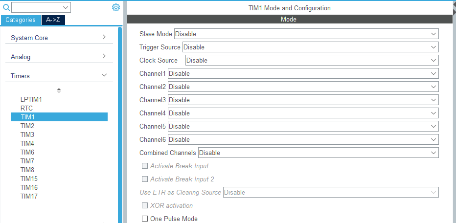
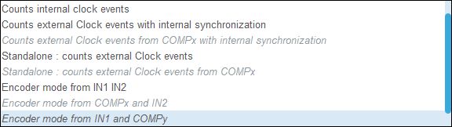

CubeMX配置功能系列：Timer（上）
目录
1. 说明
本文以STM32G4系列为例。供自己学习与记录且只做简单介绍。有一定基础的朋友可参考。
2. 界面总览
打开Timer的配置界面如图：

3. LPTIM：没用过，用过后补充
3.1. 介绍
LPTIM 是一个 16 位定时器，顾名思义他就是可以实现低功耗应用的一个特殊定时器。由于时钟源的多样性，LPTIM 能够在除待机模式以外的所有电源模式下保持运行。 即使没有内部时钟源， LPTIM 也能运行，鉴于这一点，可将其用作“脉冲计数器”，这种脉冲计数器在某些应用中十分有用。此外， LPTIM还能将系统从低功耗模式唤醒，因此非常适合实现“超时功能”，而且功耗极低。
LPTIM 引入了一个灵活的时钟方案，该方案能够提供所需的功能和性能，同时还能最大程度地降低功耗。
LPTIM时基单元包含一个16位自动重载计数器ARR，一个16位的递增计数器CNT，一个3位可编程预分频器可以采用8种分频系数（1、2、4、8、16、32、64、128）， 预分频器时钟源有多种可选，有内部时钟源： LSE、 LSI、 HSI 或 APB 时钟、外部时钟ULPTIM输入的外部时钟源（在没有 LP 振荡器运行的情况下工作，由脉冲计数器应用使用）。
3.2. 支持的模式

- 计数器模式：计数器可用于计算来自 Input1 的外部事件或用于计算内部时钟周期
- 单次模式：在此模式下，当满足匹配条件时，输出可以切换高低电平（如果输出极性配置为高，则为低电平至高电平变化，反之亦然）
- 编码器模式
此外还有 - 单脉冲模式
- PWM 模式
- 超时模式：有效的边沿触发输入可复位定时器。第一个触发事件将启动计时器，任何连续触发事件将重置计数器并重新开始。
3.3. 参考
【玩转STM32】：低功耗定时器LPTIM应用_stm32 lptim-CSDN博客
32. LPTIM—低功耗定时器 — [野火]STM32 HAL库开发实战指南——基于H743_Pro_V 文档
4. RTC：也不咋用，用时补充
4.1. 什么是RTC
RTC (Real Time Clock)：实时时钟
RTC是个独立的定时器。RTC模块拥有一个连续计数的计数器，在相应的软件配置下，可以提供时钟日历的功能。修改计数器的值可以重新设置当前时间和日期 RTC还包含用于管理低功耗模式的自动唤醒单元。
在断电情况下 RTC仍可以独立运行 只要芯片的备用电源一直供电,RTC上的时间会一直走。
RTC实质是一个掉电后还继续运行的定时器,从定时器的角度来看,相对于通用定时器TIM外设,它的功能十分简单,只有计时功能(也可以触发中断)。但其高级指出也就在于掉电之后还可以正常运行。
两个 32 位寄存器包含二进码十进数格式 (BCD) 的秒、分钟、小时（ 12 或 24 小时制）、星期几、日期、月份和年份。此外，还可提供二进制格式的亚秒值。系统可以自动将月份的天数补偿为 28、29（闰年）、30 和 31 天。
上电复位后，所有RTC寄存器都会受到保护，以防止可能的非正常写访问。
无论器件状态如何（运行模式、低功耗模式或处于复位状态），只要电源电压保持在工作范围内，RTC使不会停止工作。
4.2. 功能简介

- 激活时钟源：一般选用LSE，RTC设备因为其独特的运行方式（即掉电依旧运行）使用HSE分频时钟或者LSI的时候,在主电源VDD掉电的情况下,这两个时钟来源都会受到影响，资源消耗太大，小小的纽扣电池根本吃不消。没法保证RTC正常工作.所以RTC一般都时钟低速外部时钟LSE
- 使能RTC日历
- 可编程的闹钟A/B，如果设置了闹钟A/B的时间，则闹钟A/B设定时间会和当前日历时间对比，如果时间相等，会产生ALRA/BF事件
- 周期唤醒：可以使用RTC内部一个16位唤醒自动重载寄存器来实现，周期唤醒的时钟信号可以来自于更新日历的1Hz（ck_spre）信号，也可以使用RTC时钟的2/4/8/16分频后的时钟，设置该自动重载寄存器的值，根据时钟频率向上计数，当计数溢出时发生周期唤醒事件
- 时间戳
- Tamper：入侵检测
- 时钟校准
- 参考时钟检测？？？
4.3. 参考
How to calibrate the STM32’s real-time clock (RTC) - STMicroelectronics Community
STM32CubeMX教程10 RTC 实时时钟 - 周期唤醒、闹钟A/B事件和备份寄存器_stm32cubemx rtc-CSDN博客
【STM32】RTC实时时钟，步骤超细详解，一文看懂RTC_rtc模块-CSDN博客